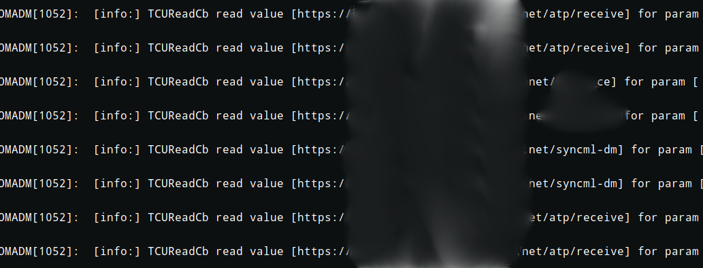
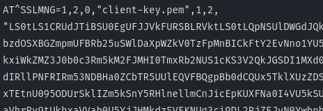
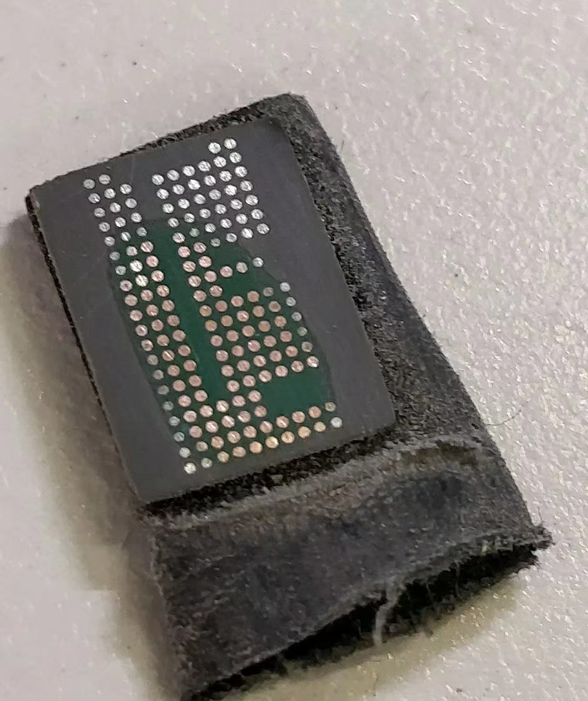

通信模组概览
在车联网领域，TCU（Telematics control unit）是联网汽车不可缺少的一个单元（也叫T-Box，Telematics Box），TCU 的联网功能由通信模组实现（也称作 M2M 模块），通信模组使用的基带芯片几乎都支持全网通，选择网络 运营商更加灵活。
在研究车联网的4年时间里，我们已经完成了几十款国产主流汽车Telematics的安全研究，对多家主机厂和 Tier 1 的 TCU 的安全性做了分析，也更加深入了解到了目前国内汽车使用的TCU产品的安全现状。通信模组作为车辆对外互联网的通信接口，是最需要做好安全重视的地方，因为范围最广的远程攻击总是会涉及到通信模组。
Tier1供应商有很多，TCU的产品也不尽相同。然而国内使用的车规级的通信模组却总是这么几款。我们先对这些通信模组的供应商进行简单分类。不管是吹还是黑，对于国内的通信模组供应商，我们不指出具体的厂商名称。
| 厂商 | 简介 |
|---|---|
| H厂 | 有多种车规级模组，国内市场占有率很高，技术实力强大，价格较贵 |
| Q厂 | 在通信模组领域占据一席之地的厂商，车规级模块主要用在中低端车型，与H厂模块一样好用 |
| Z厂 | 主要用在 IoT 设备，也有车规级模组，但占有率很低 |
| F厂 | Tier1，模组可能是H厂代工的，主要用在中低端车型， |
| L厂 | 中规中矩的厂商 |
| S厂 | 市场份额很大的通信模组厂商，在车联网领域份额不高 |
| Sierra | 规模很大的 M2M 无线通信产品和解决方案厂商 |
| Telit | 总部设在意大利的泰利特是全球领先的 M2M 无线通信产品和解决方案厂商 |
开发资料
在测试之前，需要查阅官方资料，如果没有资料、很可能无法继续研究。我们对这些厂商的资料相关属性做了对比，如下表所示。其中丰富程度体现在是否有调试或者是启动过程的参考文档，安全建议只要有地方提到过就算有，比如设置调试秘钥、关闭调试口。
| 厂商 | 资料保密程度 | 资料丰富程度 | 安全建议 |
|---|---|---|---|
| H厂 | 代码开源、资料不公开 | 高 | 有 |
| Q厂 | 代码不开源、资料部分公开 | 中 | 无 |
| Z厂 | 代码不开源、资料部分对外国人公开 | 低 | 无 |
| F厂 | 代码不开源、资料不公开 | 未知 | 未知 |
| L厂 | 代码不开源、资料不公开 | 低 | 未知 |
| S厂 | 代码不开源、资料不公开 | 未知 | 未知 |
| Sierra | 代码开源、硬件资料不公开 | 中 | 有 |
| Telit | 代码不开源、资料部分公开 | 高 | 未知 |
Sierra不提供硬件资料，但是软件资料却有很多，并且在 Github 有开源项目，文档里有时也会提到安全建议。 H厂模组代码默认不开源，发邮件给H厂，要求遵循协议（老外就是这么操作的），由于产品是国内的，国外市场的客服把我踢回CN客服，然后CN客服直接装傻。贸易战开始后，H厂把通信模组的代码也开源了。代理商不提供更深层的开发资料，除非签NDA。但是H厂提供的文档有提到安全的建议。 Q厂官方就提供资料，但是最近有些资料下不到了。跟Q厂签了NDA，提供的资料也就只有源码和一些普通开发文档，并没有安全建议。
硬件外貌
其中H厂在早期的产品使用高通的方案，后期逐渐换成了 HiSilicon LTE Cat6 的方案，一般是 HI6932 。其他厂商使用的都是高通 MDM96xx ，大部分基带芯片是 MDM9615 和 MDM9628 。
左图为 HiSilicon 方案，右图为 Qualcomm 方案，存储芯片一般是 DDR2+NAND Flash 的 MCP 封装芯片，绝大多数存储芯片是镁光颗粒。模组的封装大多是 LGA ，这样可以防止引脚直接暴露。

非车规级模块，比如Z厂在充电桩的方案，有可能是 LCC 封装，所有引脚都暴露在外部

但是也有车规级芯片使用 LCC 封装，比如左图L厂的模组。右图是 Tier 1 使用 S 厂的非车规级的模组。

拿到硬件设计资料，我们可以对封装的每个引脚标记，找到对外能利用的接口

TCU解决方案
通信模组在 TCU 的解决方案主要有两个大类，MCU 外挂模块 和 OpenCPU 方案。
MCU 外挂模块方案简单来说就是业务逻辑全部在 MCU 上，通信模组仅作为网卡，或者提供 TCP/IP 和 SSL 协议栈。这种方案对 MCU 的各方面要求较高，也不能充分利用通信模组的性能。非车规级模块性能一般，这种解决方案适合传统 IoT 设备。但是某些 Tier 1 的 TCU 也使用这种方式，非常奇怪。

对于后者，实际上就是把业务逻辑放在通信模组里， MCU 只负责控制电源管理和外围接口。别的厂商应该用过这种方案，但不是叫 OpenCPU 。 OpenCPU 这个名字国外几乎没有，貌似是H厂在国内掀起的概念，作为行业老大，后面的国内厂商也跟着使用了，路毕竟是人踩出来的，所以后面的文章也会使用这个词。

攻击面
攻击入口主要如下
- 网络层面
- CAN-Bus
- Ethernet
- WLAN
- Bluetooth
- Celluar
- 硬件层面
- UART
- JTAG
- SDIO
- SPI
- SWD
- E-SIM
对于通信模组本身，攻击场景的方向大概有下面几种
- 信息泄露：从各个调试入口获取和隐私相关或者有利于攻击的数据。
- 中间人攻击：对协议进行攻击，注入恶意的数据，实现非预期的功能。
- 固件提取：使用各种手段将 NAND Flash 的数据提取并解析出来。
- Get Shell：拿到命令执行权限，进一步攻击。
- 固件篡改：通过各种途径刷入带有后门的恶意固件并成功启动。
- 网络设备：通过对 USB 接口飞线，作为 4G 上网卡渗透内网。
根据上述方向，可以确定好攻击场景，最后一点实在太简单，没必要展开叙述。
信息泄露场景：获取用于对内网渗透测试的信息。
对于 ext MCU 方案的 TCU ，嗅探 MCU 与 LTE Module 的 UART 通信，获取到 APN 配置信息。或者直接飞线到负责AT命令的UART接口，发送查询网络配置信息。

也可以提取外置的 EMMC ，对 log 文件分析，提取出 APN 配置信息。或者通过 UART log 拿到调试用的 APN 信息。

再通过 E-SIM 飞线，对车厂或 Tier 1 内网进行渗透。

通过UART日志口获得TSP服务地址

对于双向认证的服务器，特别是 ext MCU 方案的 TCU ，通过嗅探 AT 提取出 SSL 客户端证书，对服务端进行访问

中间人攻击场景1：劫持通信模组网络下发非预期指令
客户端没有对服务端做认证，那么只要劫持到恶意的TSP，恶意TSP做中继功能，并可以注入自己的代码

通信代码同时支持两套协议，一套没有加密，一套使用AES加密，只要握手时将协议降级，就可以分析出协议格式，并对车辆进行命令注入。

非预期指令是指 MCU 层实现，但是 TSP 还没有实现的控车指令。

中间人攻击场景2：使用短信劫持攻击
汽车在某些情况，需要用短信来唤醒，但是开发者很聪明，想顺便在无网络的情况也可以远程控车。某共享汽车的模组接收短信的 AT 命令来控制车身，只需要向该设备发送短信就能攻击。是比较傻的。
另外一款汽车的早期软件版本，控车功能在无网络时，平台会通过短信隧道发送指令。早期既没有认证平台号码，也没用签名措施。使用特定的格式，没有加密算法，只有 VIN 和 Base64。
可以使用通过外部的AT接口获取短信内容。也可以使用伪基站嗅探，然后使用AT命令向其他手机号发送短信，获得M2M卡号，用其他手机向该号码发送控车指令。

在下一个版本，加入了消息认证码检验，签名使用 VIN + 唯一的动态的秘钥，动态秘钥走双向认证的云端同步，但是每次休眠都会将秘钥删除。并且和场景1的因此只要让模组的网络无法使用，那么将无法从云端同步秘钥，只能接收短信，因此该版本同时兼容两个协议

security_flag会自动变为00，程序也会跳过消息认证码检验

现在的版本不会自动删除秘钥了，也就意味着这一段过程是安全的。
固件提取场景：通过固件提取拿到关键文件
将 NAND Flash 从 SoC 上拆下

对引脚飞线，使用编程器提取里面的数据，然后将文件系统还原

随后就可以对 OpenCPU 方案的客户端程序进行分析，甚至可以拿到客户端的证书。

在这些厂商中，只有 Telit 对 NAND Flash 使用了环氧树脂防拆，强行拆会把PCB也破坏

因此我们使用砂纸打磨，露出焊盘 
再进行飞线操作

如果不想飞线，刚好又能找到 JTAG 的接口，那么就能使用 OpenOCD 对固件进行提取，目前只有H厂有 JTAG 的标注，并且对于 JTAG 调试也有专门的安全建议，只不过开发者无视了这些内容。

中断时机需要掌握好

提取出文件，接下来就是逆向分析和调试了。调试的话 QEMU 是不能满足要求的，毕竟这些系统是都有大量安卓的特征，还有外围接口要模拟，不如直接使用开发板。
GetShell-1：通过网络访问调试服务
有些设备默认就开启了网络 ADB ，监听0.0.0.0。任何处于同一网络的设备都可以访问该服务。如果该 TCU 有 WLAN 功能，那么可以通过 AT 开启 WLAN ，或者使用已有的 WLAN 来访问网络 ADB 服务。否则就劫持移动网络吧。

只是速度不太理想

对于某些未隔离的 APN 隧道的私网，可以在拿到一台设备的权限下，再横向拿到其他通信模组的权限。

GetShell-2：通过硬件调试口拿到ROOT Shell
有时会 cmdline 会直接配置tty指向外部UART口

使用弱口令就可以拿到 Shell

如果没有直接的 TTY ，也有其他方式通过 UART 拿到 Shell。 对于Q厂的模组，可以使用UART发送 AT+QLINUXCMD=“your command” 执行命令，甚至将回显可以转发到GNSS 的 UART 口，
AT+QLINUXCMD="ps" > /dev/ttyGS0
有时他们会把这种指令禁用、不过不要紧。我们将通信模组的USB线飞出，使用AT切换USB的方法，修改USB的VID和PID，让系统把设备识别成Android设备，使用ADB就能对设备进行访问。

GetShell-3：从下位机触发USB调试
有时 Tier 1 会在系统里预留一些后门，可以通过后门切换 USB 模式从而拿到 Shell
数据方向如下，在CAN总线或者在 MCU 与 LTE 模块的通信发送触发指令都可以实现，这是 Telit 的模块，后门是 Tier 1 编写的
CAN-bus->MCU->LTE Module


固件篡改场景
对于车规级通信模组， FOTA 大多数是交给第三方公司负责，F厂的设备使用Red Bend。再或者由 Tier 1 负责，一般都有自己的安全协议。有时也会通过 IVI 触发升级。现在的整车厂对传输原来越重视，这两年没有直接劫持移动网络篡改通信模组固件的案例，要么不是 OpenCPU 方案，要么就是使用了安全传输。大多数场景都是拿到 OTA 平台权限直接下发固件。
另外一种则是本地篡改，首先要获得固件，可以是提取也可以是源码编译。然后进入特定的模式，在 Telit 模块操作相应Pin 脚可以进去高通 9008 模式和 Fastboot 模式，这个 MDM96xx 系列没有公开的 Sahara，所以不能像手机取证那样提取固件，也不能像救砖那样刷写文件。但是重启到 Fastboot 就可以随便刷了。可以随便刷但不能随便启动，Telit 会验证签名。比如Q厂和H厂的有一些特殊的方式本地刷写固件，比如使用开发版固件、或者利用JTAG刷写。
- 对于没有安全传输机制的 FOTA ，可以对传输的升级包篡改。
- 如果升级程序没有签名验证，那么固件可以成功刷入系统，大多数模组都支持签名验证。
- 如果修改了Boot等分区，有安全启动机制的通信模组，可以防止这种攻击，比如H厂，Q厂。
思考
这些攻击能造成哪些危害？
TCU有 CAN-bus 接口，对于 OpenCPU 方案，只要拿到了通信模组的ROOT权限，大多数场景可以刷写 MCU 固件，接入 TCU 所在 CAN-bus 域，从而进一步侵入汽车，甚至会影响到人身安全。
这些攻击到底是因为谁的错？
以上攻击场景的漏洞，并不完全是通信模组厂商的问题，除了一些“硬伤”。最主要的还是 Tier 1 厂商设计初期没有考虑到安全问题。但是通信模组厂商也有义务唤醒 Tier 1 厂商的安全意识。
应该怎么做才不会发生这些问题？
这些通信模组在安全方面的差距，主要体现在产品开发过程和内置的系统。
首先，并不是不公开资料就能让模块变得安全。H厂公开的东西比Q厂多，但是如果考虑安全建议，H厂的设备还是要比Q厂安全一点。通信模组厂商应该在每个可能导致攻击的地方，给出生产环境应该注意的事项，让开发者知道。
另外在产品定位方面，Tier 1 厂商应该谨慎选择通信模组，如果是汽车，就应该使用车规级的模组。
开发者应该提高安全意识，攻击场景列出的不是配置问题就是自己加了后门。原理都很简单。
并不是每个 Tier 1 厂商都有能力开发出安全的系统，国内厂商的通信模组都是直接用的ROOT权限，既然是 OpenCPU 方案，就应该考虑到权限分配的问题。Sierra 通信模组就提供 legato 的系统，每个 Telematics 应用都在独立的沙箱。

Telit 的通信模组，不仅在硬件层做了防护，里面的系统还用到了一些技巧，表面上是ROOT权限，实际上是 chroot 到了其他目录，而且没有完整的权限，连字符设备都访问不了。
工信部提出车的联网（智能网联汽车）产业发展行动计划，加上在2020年实施的"国六"排放政策，传统汽车在市场占有率会越来越低，取而代之的是网联汽车。因此，这也意味着未来网联汽车会面临许多安全问题，不论是现在的 Telematics 还是将来的 V2X ，都会用到通信模组。

 CC BY-NC-SA 4.0
CC BY-NC-SA 4.0